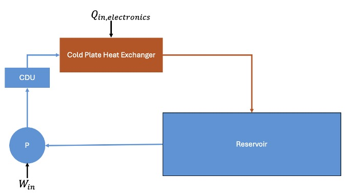
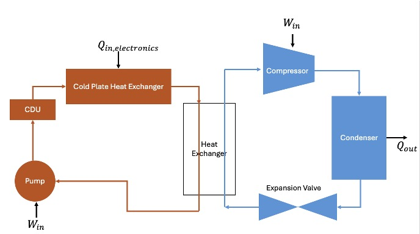

Data Center Cooling Cycle Comparison
Energy System Design and Analysis | Georgia Tech | 2025
For an energy systems class, myself and three teammates developed steady-state thermodynamics models for two liquid cooling architectures for a 4.32 MW data center: an open loop system pumping water from a natural reservoir, and a closed loop system using a vapor-compression chiller. Both systems were modeled using cold plate heat exchangers mounted directly to server hardware, with parametric studies and economic analysis used to compare their performance, feasibility, and cost. I worked on the closed loop model.
As AI and computing demand continues to grow, data centers face rapidly increasing thermal loads, with cooling already accounting for roughly 38% of total facility energy usage. The data center modeled has 900 servers, each generating up to 4.8 kW of heat for a total load of 4.32 MW. The cooling system must keep chip temperatures within the 10-35°C operational range while complying with environmental regulations. For the open loop, the system must not damage the reservoir it pulls from with less than 1°C across the heat exchanger and less than 2.78°C total temperature change of the reservoir over its lifetime. Additionally, the pipe between the reservoir and data center needs pressure drop less than 5 psi to prevent degradation. For the closed loop, the chiller had to reject heat to ambient air across a wide range of climates while operating with a physically valid positive temperature gradient at the condenser.
Both models were built in Engineering Equation Solver (EES) and cross-checked to ensure consistent inputs and assumptions across systems. The cold plate heat exchanger shared by both systems was designed using a thermal resistance network that accounts for conduction through the steel server casing, conduction through the copper tube wall, and internal convection. For the closed loop, we modeled a two-loop system: an electronics cooling loop (water) connected via a central heat exchanger to a vapor-compression chiller loop using R1234yf. State points were solved using thermodynamic property lookups, with closest approach temperatures enforced at both the central heat exchanger and condenser to ensure physically valid heat transfer direction. Several chiller working fluids were considered but R1234yf was selected for its low global warming potential and favorable thermodynamic properties at the operating temperature range. Parametric sweeps were run across pump efficiency, compressor efficiency, heat exchanger CAT, pressure ratio, ambient temperature, and ambient pressure.
The final geometry of the cold plate heat exchanger modeled was a 30 mm diameter copper tube making 12 passes for a total length of 5.208 m, yielding a pressure drop of 4.121 psi. The closed loop electronics loop operates at a mass flow rate of 103.6 kg/s, with the chiller loop requiring only 19.09 kg/s of R1234yf thanks to heat absorption during phase change. The chiller achieved a coefficient of performance (COP) of 13.61 and the overall system COP was 25.34, with total work input of 170.5 kW, most of which is from the compressor at 159.1 kW. Varying ambient temperature from -13°F to 116°F showed stable system performance and positive CAT throughout. Compared to the open loop, the closed loop requires less total work and improves Power Usage Effectiveness (PUE). The open loop costs lest initially but has higher annual electricity cost and the closed loop becomes more economical after just 3.6 years. The open loop is also constrained by geography: it requires a reservoir of at least 0.23 km³ with cool air temperature, while the closed loop can be deployed anywhere.

